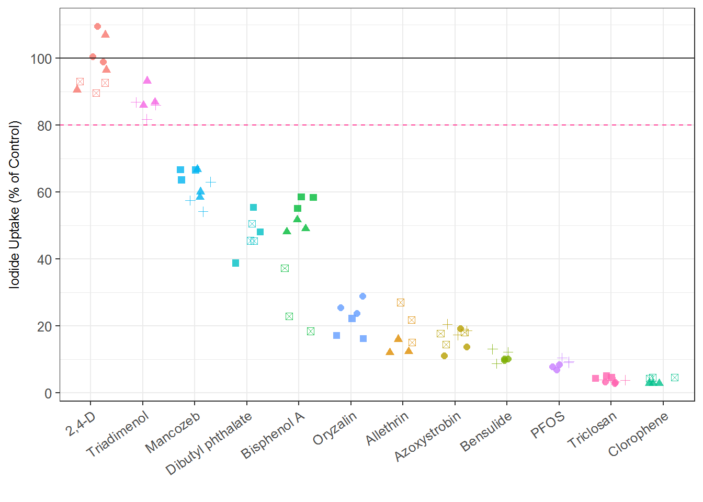
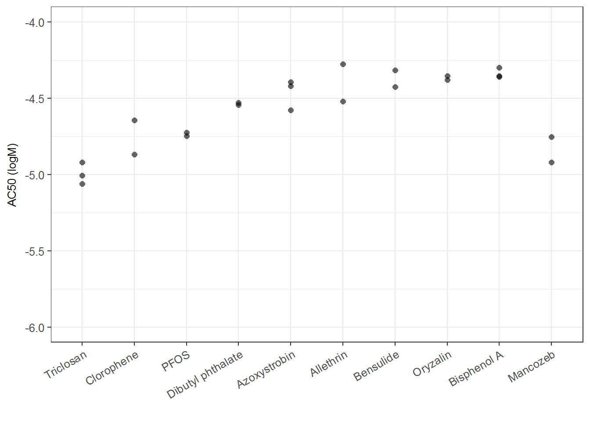

7 ToxCast Internal Replicates
7.0.1 Single-con internal Replicate performance
ToxCast Ph1_v2 library included internal replicates. They are the same chemical but under different sample id, therefore tested blindly with each sample repliated three times. .
There are 12 chemicals been repeated, showed in the following table
name_code <- spid_chnm_table %>% dplyr::select(spid, casn, chnm)
#check which chemical is repeated in toxcast ph1_v2 library
chnm_freq <- data.frame(table(name_code$chnm)) %>% arrange(desc(Freq))
internal_rep <- head(chnm_freq, 12)
knitr::kable(internal_rep)| Var1 | Freq |
|---|---|
| 2,4-Dichlorophenoxyacetic acid | 3 |
| Azoxystrobin | 3 |
| Bisphenol A | 3 |
| Mancozeb | 3 |
| Triclosan | 3 |
| Allethrin | 2 |
| Bensulide | 2 |
| Clorophene | 2 |
| Dibutyl phthalate | 2 |
| Oryzalin | 2 |
| PFOS | 2 |
| Triadimenol | 2 |
#spid_chnm_table %>% filter(chnm %in% internal_rep$Var1) %>% View()##add chnm to sc data
sc_unblind <- left_join(dt_sc_norm, name_code, by= "spid")
## get sc data for interval replicates
sc_rep <- sc_unblind %>% dplyr::filter(chnm %in% internal_rep$Var1)
sc_rep$chnm <- str_replace(sc_rep$chnm, "2,4-Dichlorophenoxyacetic acid", "2,4-D")
sc_rep %>%
dplyr::select(chnm, pid, nval_median) %>%
write_csv("./output figure's source data/Fig.3a.data.csv")
library(RColorBrewer)
ir1 <- ggplot(sc_rep, aes(x=reorder(chnm, -nval_median), y=nval_median) ) +
geom_point(size=2, alpha = 0.8, aes(shape=pid, color=chnm), position = position_jitter(width=0.3)) +
xlab("") +
ylab("Iodide Uptake (% of Control)")+
geom_hline(yintercept = 80, linetype="dashed", color="violetred1") +
geom_hline(yintercept = 100, alpha=0.8) +
scale_y_continuous(breaks = seq(from = 0, to =100, by=20))+
theme_bw(base_size = 12) +
theme(axis.text.x = element_text(angle=35, vjust=1, hjust=1),
#axis.text.y = element_text(size = 12))+
axis.title = element_text(size = rel(0.8)))+
#theme(plot.margin = NULL) +
theme(legend.position="none")
ir1
# dev.off()7.0.2 Multi-con internal controls replication performance
##add chnm to mc data
mc_unblind <- left_join(dt_mc_norm, name_code, by= c("spid"="spid"))
##gettting reps's metrics
mc_rep_sum <-
sum_tbl %>% filter(chnm %in% internal_rep$Var1)
## getting range of ac50s
mc_rep_sum %>%
filter(!is.na(AC50_prim)) %>%
group_by(chnm) %>%
summarize(min = min(AC50_prim),
max= max(AC50_prim),
range = min - max) %>%
arrange(desc(range)) %>%
knitr::kable(digits = 2, caption = "Range of AC50 for internal replicates")| chnm | min | max | range |
|---|---|---|---|
| Dibutyl phthalate | -4.54 | -4.53 | -0.02 |
| PFOS | -4.75 | -4.72 | -0.02 |
| Oryzalin | -4.38 | -4.35 | -0.03 |
| Bisphenol A | -4.36 | -4.30 | -0.06 |
| Bensulide | -4.42 | -4.31 | -0.11 |
| Triclosan | -5.06 | -4.92 | -0.14 |
| Mancozeb | -4.92 | -4.75 | -0.17 |
| Azoxystrobin | -4.58 | -4.39 | -0.19 |
| Clorophene | -4.87 | -4.64 | -0.22 |
| Allethrin | -4.52 | -4.27 | -0.24 |
# mc_rep_sum %>%
# dplyr::select(chnm, AC50_prim) %>%
# write_csv("./output figure's source data/Fig.3b.data.csv")
# write_csv("./output data files/internal_rep_ac50_range.csv")
##plot all points of ac50
ir2 <- ggplot(mc_rep_sum, aes(x=reorder(chnm, AC50_prim), y=AC50_prim) ) +
geom_point(size = 2, alpha = 0.6, shape = 16) +
xlab("") +
ylab("AC50 (logM)")+
ylim(-6, -4)+
theme_bw(base_size = 12) +
theme(axis.text.x = element_text(angle=30, vjust=1, hjust=1),
#axis.text.y = element_text(size = 5),
legend.position = "none",
axis.title = element_text(size = rel(0.8))
#plot.margin = NULL
)
ir2## Warning: Removed 1 rows containing missing values (geom_point).
# dev.off()
ir <- arrangeGrob(ir1, ir2)## Warning: Removed 1 rows containing missing values (geom_point).# ggsave("./output plots/Fig3.png", ir, dpi=900, width=5, height=6)